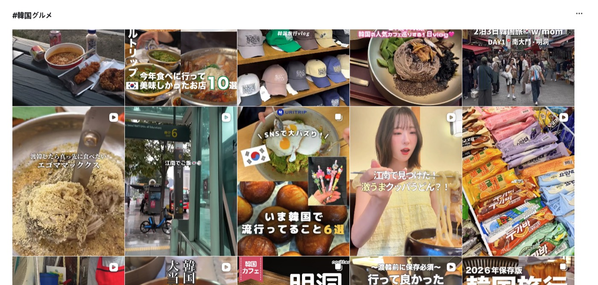
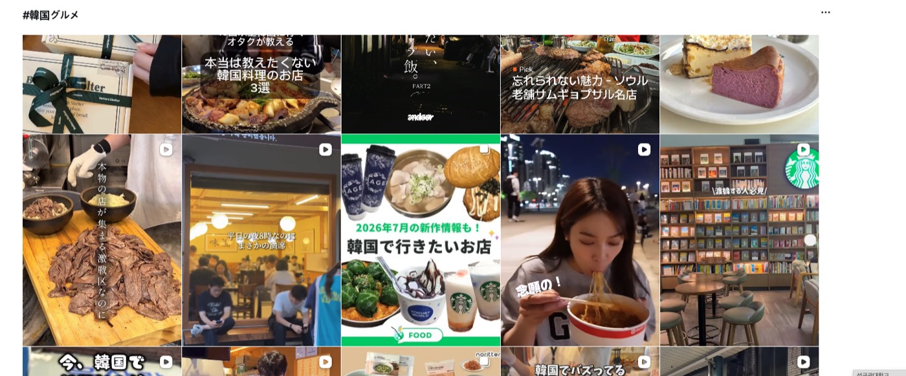

미례국밥 × 브랜드라이즈
강남점 — 2026년 8월 운영 보고서
1
8월에 하기로 한 것 · 실제로 한 것
약속 대비 실행 여부부터 · 성과는 그 아래
| 8월에 하기로 한 것 | 실제로 한 것 | 완료 |
|---|---|---|
| 네이버플레이스 운영댓글 응대 포함 | 리뷰 640건 응대 · "강남역 맛집" 38위 → 5위4개 매장 중 리뷰가 가장 많습니다 (센텀 390 · 시청 369 · 전포 204) | 완료 |
| 블로그 체험단 20인 | 19건 발행 완료8/15~8/29 회차 · 잔여 1인은 9월 모집분에 합산 | 19 / 20 |
| 일본 인플루언서 8인 | 5편 발행 완료 · 조회 137,583 · 저장 4,055건잔여 3인은 9월에 발행됩니다 — 추가 비용 없습니다 | 5 / 8 |
| 마이크로 인플루언서 + 돋보기 | 국내 인플루언서 발행 + 돋보기 10개 계정 동시 발행8/26 돋보기 총 노출 166,241 (예상 10~20만 상단) | 완료 |
2
8월 성과
유입 · 키워드 순위 · 국내 인플루언서 반응
월 방문 유입
38,163
7월 24,647 → +55%
네이버지도
25,196
7월 19,781 → +27%
리뷰 등록 (월)
640건
체험단 40인 → 20인 축소 반영
"강남역 맛집"
5위
7월 38위 → 5위
| 키워드 | 월 검색량 | 7월말 | 8월말 |
|---|---|---|---|
| 강남역 맛집 | 96,200 | 38위 | 5위 |
| 강남역 한식 | 2,590 | 14위 | 3위 |
| 강남역 한식 맛집 | 1,320 | 14위 | 3위 |
| 강남역 국밥 | 1,430 | 2위 | 1위 |
| 강남삼성타운맛집 | 50 | 13위 | 1위 |
| 강남역 돼지국밥 | 130 | 1위 | 1위 |
| 돼지국밥 (전국) | 66,650 | 114위 | 104위 |
| 강남 국내 인플루언서 (8월) | 팔로워 | 조회수 | 좋아요 | 저장 | 공유 |
|---|---|---|---|---|---|
| 맛집감 | 2만 | 18,031 | 115 | 56 | 107 |
| 세로본능 | 1,174 | 11,349 | 173 | 100 | 350 |
| 취향백서 | 5,257 | 4,924 | 50 | 47 | 31 |
| 슬립디쉬 | 3.7만 | 8/26 발행 · 집계 수집 중 | |||
팔로워가 작아도 잘 터집니다. 세로본능은 팔로워 1,174명인데 조회 11,349 · 공유 350이 나왔습니다. 팔로워 수보다 영상이 얼마나 퍼지느냐가 중요하다는 뜻이라, 9월 섭외도 팔로워 규모보다 반응률을 기준으로 잡겠습니다.
7월까지는 "돼지국밥"을 찾는 사람에게만 떴습니다. 8월부터는 그냥 강남에서 밥 먹을 곳을 찾는 사람에게도 뜹니다. 유입 +55%가 여기서 나왔습니다.
3
일본 트랙
8월 1순위 목표 · 일본어 검색어 상위 노출 확인
일본 영상 조회수
137,583
업로드 5편 합계
저장
4,055건
국내 인플루언서 203건의 20배
저장률
2.95%
국내 0.59% → 5배
일본어 검색 노출
상위
#江南グルメ 최상단 · 주요 검색어 다수
일본인이 실제로 쓰는 주요 검색어에서, 미례국밥 콘텐츠가 상위에 노출되고 있습니다.
8월 1순위 목표였던 "일본어로 검색했을 때 우리가 뜨는가"에 답이 나왔습니다. 특히 #江南グルメ(강남 맛집)에서는 강남점 매장 외관이 최상단 첫 칸에 걸려 있습니다.
8월 1순위 목표였던 "일본어로 검색했을 때 우리가 뜨는가"에 답이 나왔습니다. 특히 #江南グルメ(강남 맛집)에서는 강남점 매장 외관이 최상단 첫 칸에 걸려 있습니다.
| 상위 노출 확인된 일본어 검색어 | 뜻 | 노출 형태 |
|---|---|---|
| #江南グルメ | 강남 맛집 | 최상단 첫 칸 — 강남점 매장 외관 |
| #韓国グルメ | 한국 맛집 | 상단 — "강남에서 발견! 엄청 맛있는 국밥우동?!" |
| #江南レストラン | 강남 레스토랑 | 상단 — "한국인으로 만석!! 강남역 맛집" |

#江南グルメ (강남 맛집) — 검색 결과 최상단 첫 칸에 강남점 매장 외관이 그대로 노출됩니다. 캡션은 "서울 상륙했다고 해서 왔다".

#江南グルメ (강남 맛집) — 같은 검색어 상단의 돼지우동 클로즈업 · 조회 9.8만.

#江南レストラン (강남 레스토랑) — "한국인으로 만석‼️ 강남역에 있는 엄청 맛있는 집".

#韓国グルメ (한국 맛집) — 오른쪽에 "강남에서 발견! 엄청 맛있는 국밥우동?!", 그 왼쪽은 일본 인플루언서 URITRIP의 큐레이션 게시물입니다.

#韓国グルメ (한국 맛집) — "평일 밤 8시인데 놀랍게도 만석" 등 매장 혼잡도를 보여주는 컷이 함께 잡힙니다.
이 밖에 #江南ひとりごはん(강남 혼밥) · #韓国でひとりごはん(한국에서 혼밥) · #韓国一人旅(한국 혼행) · #韓国旅行(한국 여행) · #ソウルグルメ(서울 맛집) 계열에서도 노출이 확인됩니다.
돼지우동이 일본어 검색과 잘 맞습니다. "혼밥(ひとりごはん)"으로 찾는 여행객에게는 혼자 들어가 한 그릇 먹고 나올 수 있는 집이 필요한데, 국밥이 정확히 그 자리입니다.
돼지우동이 일본어 검색과 잘 맞습니다. "혼밥(ひとりごはん)"으로 찾는 여행객에게는 혼자 들어가 한 그릇 먹고 나올 수 있는 집이 필요한데, 국밥이 정확히 그 자리입니다.
| 일본 인플루언서 | 팔로워 | 조회수 | 좋아요 | 저장 | 공유 |
|---|---|---|---|---|---|
| URITRIP | 2.7만 | 84,573 | 1,800 | 3,300 | 350 |
| touta_momo | 4,987 | 20,857 | 151 | 72 | 3 |
| Eri | 9,255 | 15,297 | 142 | 213 | 21 |
| jennie | 1만 | 12,174 | 157 | 383 | 9 |
| Moa | 8,107 | 4,682 | 48 | 87 | 19 |
| 합계 (5편) | — | 137,583 | 2,298 | 4,055 | 402 |
저장이 압도적입니다. 일본 영상은 본 사람 100명 중 3명이 저장했습니다(국내 인플루언서는 0.6명). 여행객은 "한국 가면 여기 가야지" 하고 담아두기 때문입니다. 돋보기 콘텐츠에서 확인한 것과 같습니다 — 좋아요는 스쳐 간 사람, 저장은 갈 마음이 있는 사람입니다.
URITRIP 한 편은 팔로워(2.7만)의 3.1배인 8.5만 조회가 나왔습니다. 팔로워 밖으로 퍼졌다는 뜻이고, 이게 검색에 잡히는 이유입니다.
URITRIP 한 편은 팔로워(2.7만)의 3.1배인 8.5만 조회가 나왔습니다. 팔로워 밖으로 퍼졌다는 뜻이고, 이게 검색에 잡히는 이유입니다.
8월에는 광고를 1편만 집행했습니다 — 의도한 순서입니다.
일본 인플루언서는 방한 일정에 맞춰 섭외하다 보니 발행이 8월 하순에 몰렸습니다. 그래서 광고부터 붙이지 않고, 광고 없이 영상 자체가 얼마나 퍼지는지(오가닉)를 먼저 확인했습니다. 광고를 처음부터 태우면 그 성과가 영상이 좋아서인지 광고비 때문인지 구분되지 않기 때문입니다.
결과는 위 숫자입니다 — 광고 없이 조회 137,583 · 저장 4,055건, URITRIP 한 편은 팔로워의 3.1배까지 퍼졌습니다. 영상 자체의 힘이 확인됐으니, 이제 광고를 붙일 차례입니다.
그래서 9월 일본 트랙 200만은 신규 3인을 붙이고, 검증된 소재에 광고를 제대로 태우는 데 씁니다.
일본 인플루언서는 방한 일정에 맞춰 섭외하다 보니 발행이 8월 하순에 몰렸습니다. 그래서 광고부터 붙이지 않고, 광고 없이 영상 자체가 얼마나 퍼지는지(오가닉)를 먼저 확인했습니다. 광고를 처음부터 태우면 그 성과가 영상이 좋아서인지 광고비 때문인지 구분되지 않기 때문입니다.
결과는 위 숫자입니다 — 광고 없이 조회 137,583 · 저장 4,055건, URITRIP 한 편은 팔로워의 3.1배까지 퍼졌습니다. 영상 자체의 힘이 확인됐으니, 이제 광고를 붙일 차례입니다.
그래서 9월 일본 트랙 200만은 신규 3인을 붙이고, 검증된 소재에 광고를 제대로 태우는 데 씁니다.
4
돋보기 콘텐츠
8/26 · 10개 계정 동시 발행
총 노출
166,241
예상 10만~20만 → 상단 도달
건당 평균 노출
16,624
10건 전부 예상 범위(1~2만) 안
반응 합계
892
좋아요 791 · 공유 40 · 리포스트 32 · 저장 25
게재 계정
10곳
팔로워 3.7만~11.9만 · 합 80.2만
| 콘텐츠 컨셉 | 건수 | 노출 | 좋아요 | 저장+리포스트 |
|---|---|---|---|---|
| ㄹㅇ 부산사람만 안다는 찐국밥 | 5 | 82,826 | 355 | 47 |
| 의외로 어울리는 음식 조합 ㄷㄷ | 5 | 83,415 | 436 | 10 |
노출은 두 컨셉이 같은데, 저장·리포스트가 4.7배 차이 납니다. "음식 조합"은 좋아요가 더 많지만 거기서 끝납니다. "부산사람만 아는 집" 쪽이 나중에 가보려고 저장하고, 친구에게 퍼 나르는 반응을 만들었습니다.
좋아요는 스쳐 지나간 사람이고 저장·리포스트는 갈 마음이 있는 사람입니다. 다음에 돋보기를 돌릴 땐 "현지인만 아는 집" 계열로 잡겠습니다.
좋아요는 스쳐 지나간 사람이고 저장·리포스트는 갈 마음이 있는 사람입니다. 다음에 돋보기를 돌릴 땐 "현지인만 아는 집" 계열로 잡겠습니다.
9월에는 이렇게 갑니다
1,080 → 380. 성수기 예산 종료 · 일본 트랙 200만으로 한 달 더 (9월 6편 발행)